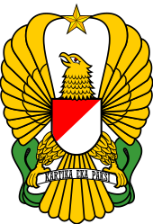

Indonesian National Military-Land Force

The Indonesian Army, Tentara Nasional Indonesia Angkatan Darat (TNI-AD) (Translated 'Indonesian National Military-Land Force') is the land branch of the Indonesian National Armed Forces. It has an estimated strength of 300,000 active personnel. The history of the Indonesian Army has its roots in 1945 when the Tentara Keamanan Rakyat (TKR) "People's Security Forces" first emerged as a paramilitary and police corps.
Since the nation's independence movement, the Indonesian Army has been involved in multifaceted operations ranging from the incorporation of Western New Guinea, the Indonesia-Malaysia Confrontation, to the annexation of East Timor, as well as internal counter-insurgency operations in Aceh, Maluku, and Papua. The army's operations have not been without controversy; it has been periodically associated with human rights violations, particularly in West Papua, East Timor and Aceh.
The Indonesia Army is composed of a headquarters, 15 military regional command (Kodam), a strategic reserve command (Kostrad), a special forces command (Kopassus), and various adjunct units. It is headed by the Chief of Staff of the Army (Kepala Staf Angkatan Darat KSAD or KASAD).
Tank composition

Indonesian Army's tanks is composed of:
- "Harimau" (Indonesian with the help of Turkey) (Medium Tank)
- "AMX-13" (French with the help of Netherland) (Light Tank)
- "Leopard 2" (German) (MBT)
- "FV101 Scorpion" (British) (Light Tank)
- "M3 Stuart" (American) (Light Tank)